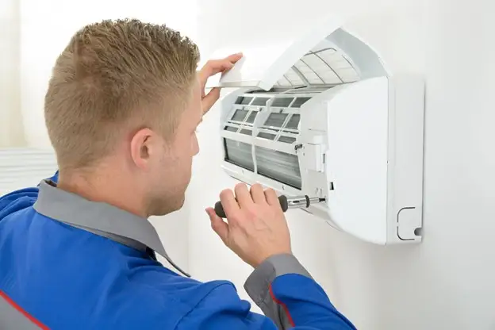

May 4, 2021
Regular HVAC maintenance is key to keeping your system running at its best. When a professional services your system, it will work better, run cleaner, and last longer. If you want to reduce repair costs and lower your energy bills, there is no better service than Goff Heating/Air Conditioning & Plumbing!
Service agreements offered by Goff are customized to fit your every comfort and need—and come with some great incentives too!
The Benefits of a Service Agreement
So, what makes service agreements so awesome?
For starters, maintenance is not always a one-time thing. Think about your car, for example. If you take your car to a mechanic for repairs or an oil change, will the vehicle be good for the rest of its life? Of course not! If you want to keep your car looking and running its best, you need to schedule routine care.
Regular service and maintenance to your HVAC system will help it last longer, with fewer repairs or costly replacements down the line.
Maintenance programs are perfect for this. You get annual care for your furnace, air conditioner, heat pump—you name it! Therefore, you always have peace of mind knowing that your system is receiving all of the top-class care it needs to keep running at its best for years to come.
Why is Regular Maintenance Important?
Regular maintenance involves more than just a little check-up. When you undergo routine maintenance, your system will:
Run efficiently. An efficient, well-maintained system will run better and cost less to operate—leading to more comfort at a lower cost!
Have fewer breakdowns. Breakdowns and costly repairs are often caused by component failures and debris buildup in HVAC systems. Our team can catch these complications early with routine maintenance, saving you from costly repairs!
Last for years to come. A standard HVAC system should last for a decade, but if you do not get routine maintenance, that lifespan could be reduced by as much as half.
Produce better air quality. Your home may be more prone to poor air quality if you use a furnace, central heat pump, or air conditioning unit where dust and debris can accumulate. By removing this buildup from your home’s HVAC systems regularly, you can create a healthier and more comfortable environment for you to live in.
HVAC Service & Maintenance in Texarkana
It is important to consult qualified and experienced HVAC technicians, like ours at Goff Heating/Air Conditioning & Plumbing, for any skilled repairs or maintenance that can extend the life of your HVAC system. Count on us to deliver a system that perfectly fits your needs—and do the job correctly the first time, every time. Contact us today to get started.